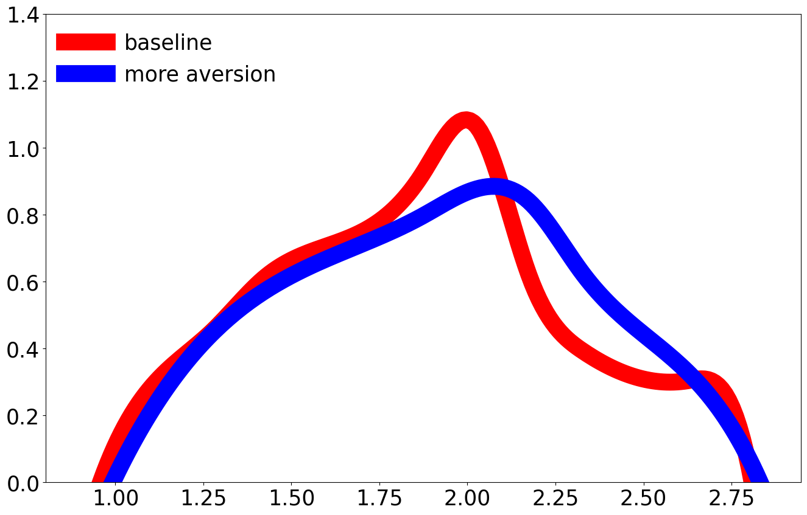
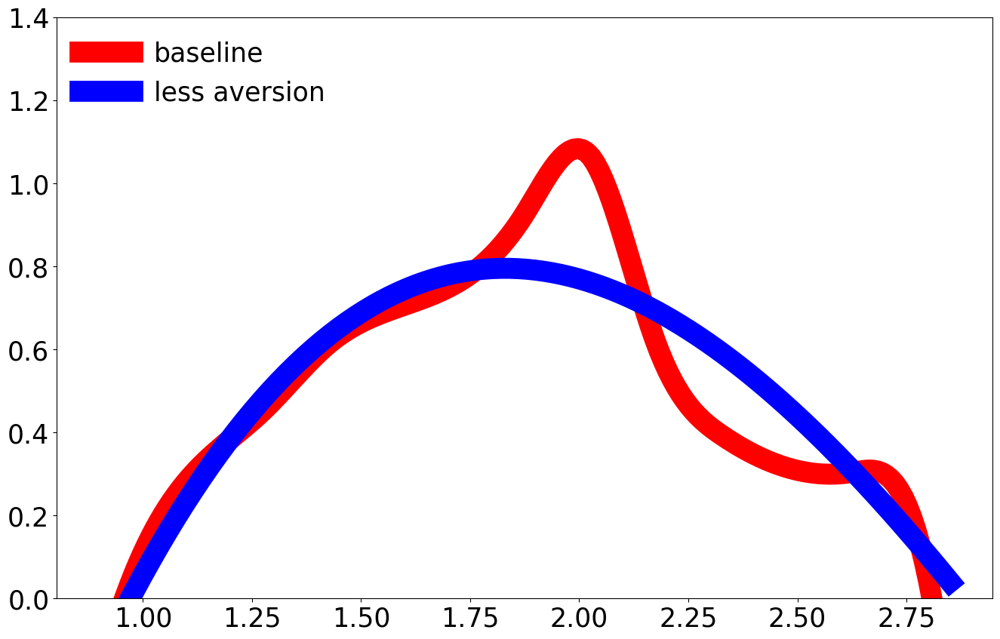
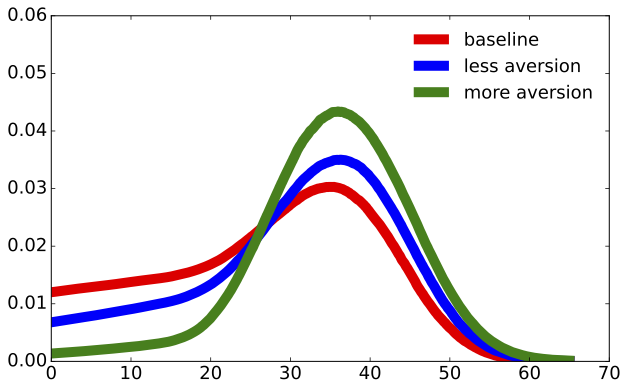
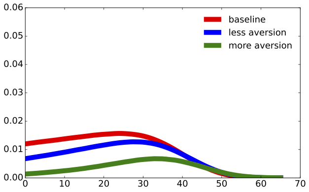
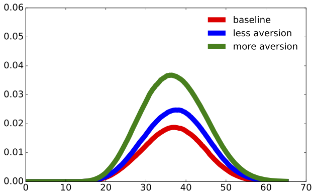
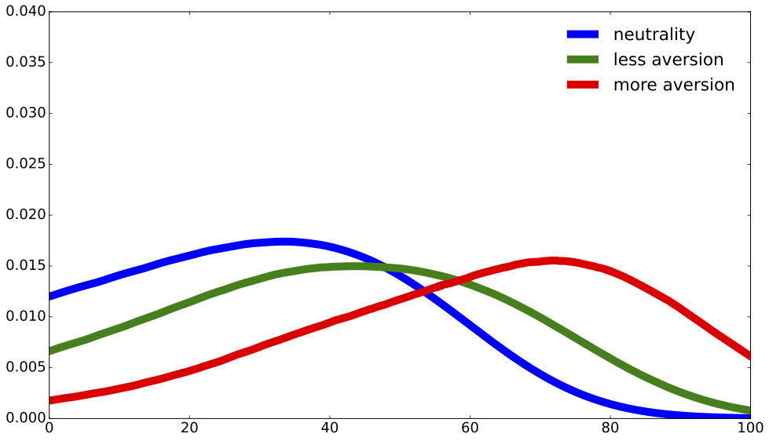
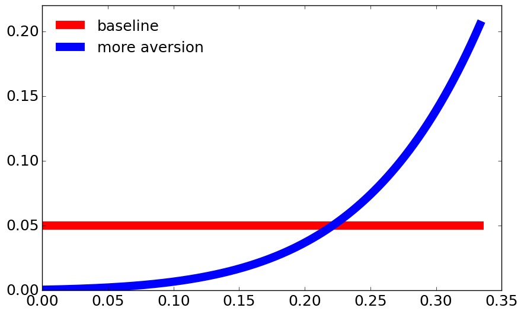
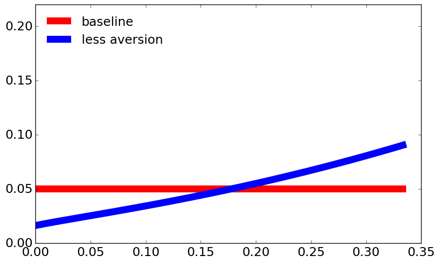

2. Worst-case distributions#
2.1. Drift distortions #
After solving the HJB equations, we can immediately get drift distortions for capital stock evolution and the knowledge stock evolution at the initial time period:
\(h_k(X0)\) |
\(h_r(X0)\) |
|
|---|---|---|
more aversion (\(\xi = .05\)) |
-0.184 |
-0.008 |
less aversion (\(\xi = .1\)) |
-0.096 |
-0.003 |
bash ./conduction/Postdamage_NewPlug.sh "4"
bash ./conduction/Postdamage_sub_NewPlug.sh "4"
bash ./conduction/Predamage_NewPlug.sh "4"
bash ./conduction/FeymannKacs_prepare_NewPlug.sh "4"
After the run finishes, the program prints to the job-outs Graph_Simulate_prepare file: $h_k(X0) = ...$ and $h_k(X0) = ...$.
Source scripts:
2.2. Distorted density for climate models #
The decision-maker has a baseline probability \(dP_t(\theta)\) for each time instant, \(t\), and makes an adjustment for ambiguity by solving
where \(\Phi^{\ast}\) is the robustly optimal solution and \(\bar h\) is deduced from a preference specification with misspecification aversion. The minimizing density takes the form of


bash ./conduction/Postdamage.sh "false" "false" "false" "true" "false"
bash ./conduction/Postdamage_sub.sh "false" "false" "false" "true" "false"
bash ./conduction/Predamage.sh "false" "false" "false" "true" "false"
bash ./conduction/ZeroShockTrajectories_simulate.sh "false" "false" "false" "true"
bash ./conduction/ZeroShockTrajectories_plot.sh "false" "false" "false" "true"
After the run finishes, you should have an output file named in a pattern similar to
ClimateSensitivity_pmean_0,xic=0.100Aversion Intensityless aversion_rho=1.0_delta=0.01_phi0=0.5.png.
Source scripts:
2.3. Distorted density for the time of the first jump #
By conditioning first on the state-variable history, we find that the probability that a jump has occurred by time \(t\) is
which increases in \(t\).
The implied density obtained by differentiating with respect to \(t\) is
We express \(f\) as
where



bash ./conduction/Postdamage_NewPlug.sh "4"
bash ./conduction/Postdamage_sub_NewPlug.sh "4"
bash ./conduction/Predamage_NewPlug.sh "4"
bash ./conduction/FeymannKacs_prepare_NewPlug.sh "4"
bash ./conduction/FeymannKacs_simulate_NewPlug.sh "4"
bash ./conduction/FeymannKacs_plot_composite_NewPlug.sh "4"
After the run finishes, you should have output files named in a pattern similar to
all_channel_on_0.1CompositeTechnology0.083_Discount_nodeltadt_Processs_dt.pdf,
all_channel_on_0.1CompositeTechnology0.083_Discount_nodeltadt_tech_Processs_dt.pdf,
all_channel_on_0.1CompositeTechnology0.083_Discount_nodeltadt_damage_Processs_dt.pdf.
Source scripts:

bash ./conduction/Postdamage_NewPlug.sh "4"
bash ./conduction/Postdamage_sub_NewPlug.sh "4"
bash ./conduction/Predamage_NewPlug.sh "4"
bash ./conduction/FeymannKacs_prepare_NewPlug.sh "4"
bash ./conduction/FeymannKacs_simulate_NewPlug.sh "4"
bash ./conduction/FeymannKacs_plot_composite_NewPlug.sh "4"
When the run finishes you should have output files named in a pattern similar to
one_jump_pre_post_aversion_CompositeTechnology0.083_Discount_nodeltadt_tech_Processs_dt.pdf.
Source scripts:
2.4. Distorted probabilities across the alternative damage curves #
Since there are multiple damage-curve realizations, we report how misspecification aversion shifts the weights of the unknown damage curve parameter, \(\lambda_3\).


bash ./conduction/Postdamage_NewPlug.sh "4"
bash ./conduction/Postdamage_sub_NewPlug.sh "4"
bash ./conduction/Predamage_NewPlug.sh "4"
bash ./conduction/FeymannKacs_prepare_NewPlug.sh "4"
bash ./conduction/FeymannKacs_simulate_NewPlug.sh "4"
bash ./conduction/FeymannKacs_plot_composite_NewPlug.sh "4"
After the run finishes, you should have output files named in a pattern similar to
all_channel_on_0.1less aversionTechnologydamage_curve_year_splines_0.png.
Source scripts: